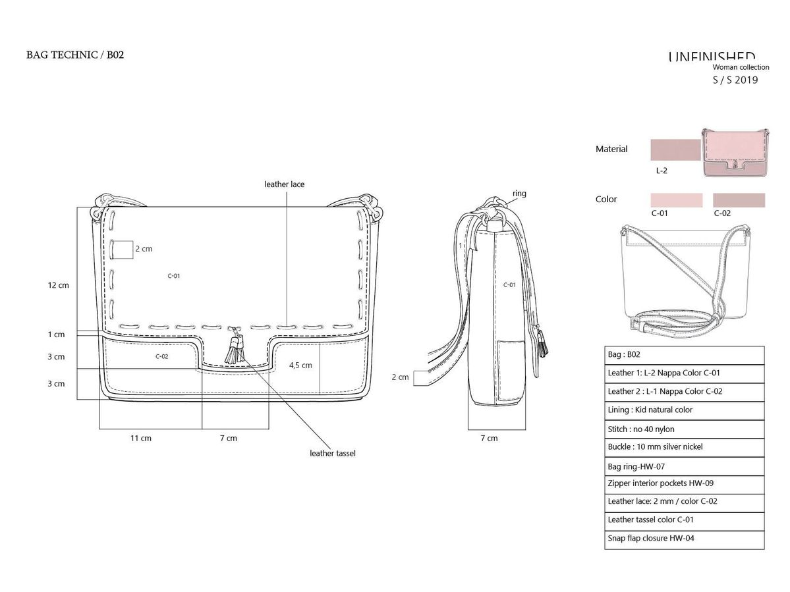
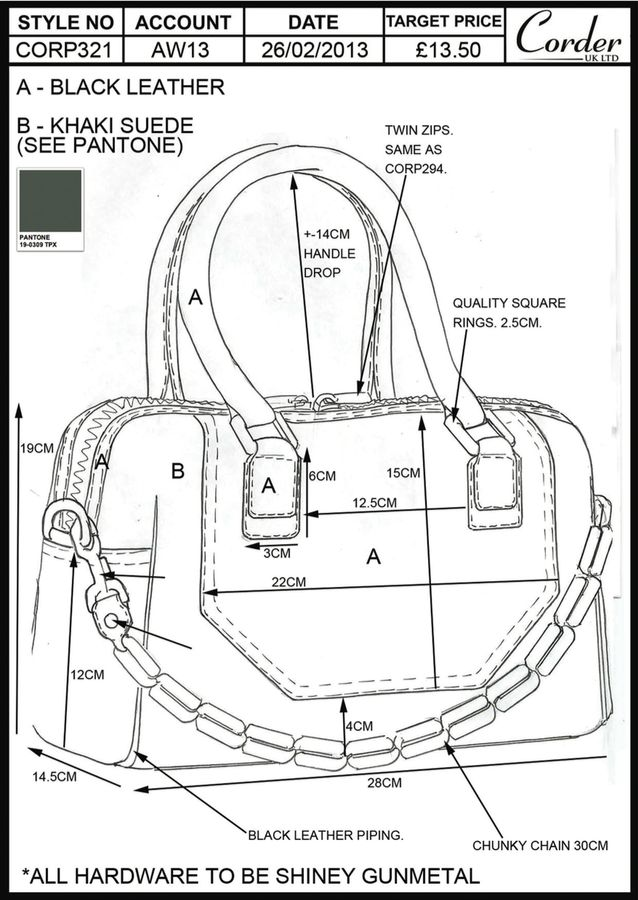
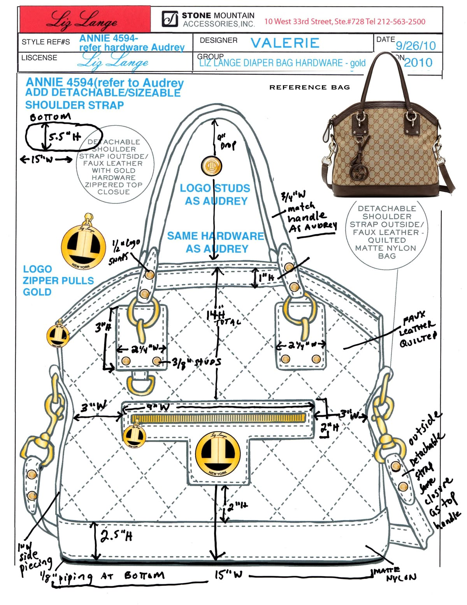

La ficha técnica que necesito
Con una foto solo del frente únicamente puedo dar una estimación. Para un precio y un patrón precisos necesito el dibujo técnico con vistas y medidas, como en los ejemplos de esta página.
Vistas
Frente, espalda, lateral, arriba y base, más una vista de 3/4.
Medidas generales
Ancho, alto y profundidad, arriba y en la base si el bolso se ensancha o se estrecha.
Medidas de estilo
Solapa y superposición, posición de los cierres, distancia entre los enganches, ancho de bandas, trabillas y aplicaciones.
Asas y bandoleras
Caída, ancho y largo; si son regulables o extraíbles.
Interior
Forro, bolsillos con sus medidas, cremalleras y separadores.
Materiales y herrajes
Material y color de cada pieza; código, medida y acabado de anillas, hebillas, cierres y pies, o sus fichas técnicas.
Acabados
Cantos pintados o doblados, vivos, pespuntes, acolchados, trenzados, logotipo y tolerancias.
Ejemplos de fichas técnicas
Este es el tipo de fichas con las que trabajo. En cada una indico la clase que asignaría a ese modelo.

Bandolera con solapa y separador interior, cierre a presión, cordón decorativo y bolsillo interior con cremallera.

Bandolera con solapa trenzada con cordón, borla y hebilla: trabajo decorativo en todo el contorno.

Bolso de mano estructurado con cierre metálico, pies, compartimento interior y forro de Alcantara.

Bolso bowling con cremallera superior, bolsillos laterales con cremallera y bandolera regulable y extraíble.

Bolso bowling en dos materiales con vivo, doble cremallera, anillas cuadradas y cadena.

Saddle bag con correas y hebillas, bolsillo frontal con cremallera, pies y bolsillo trasero.

Bolso baúl acolchado con muchas aplicaciones metálicas, vivo en la base y bandolera extraíble.